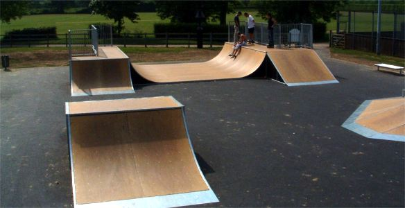
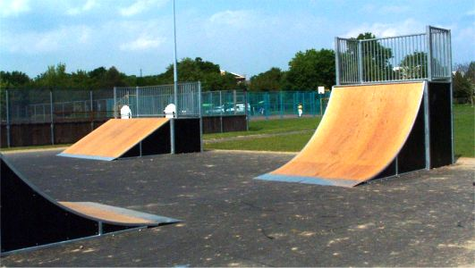
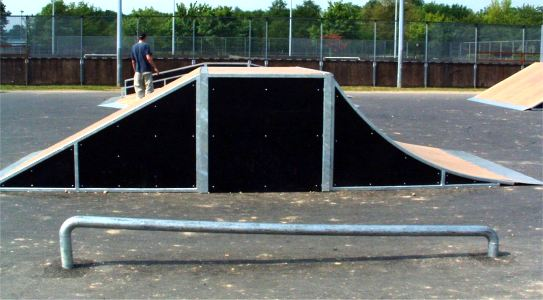

Review of Tonbridge Skatepark. Opened 15th May 2004.

The Skate Park, which cost £115,000, was provided by Tonbridge & Malling Borough Council. That's right one hundred and fifteen thousand pounds. That's a lot of money. Look at the picture. What do you see. That mini looks small but the transitions are steep. Too steep by a long way. Look at the box. That's right, coping, on the lip. Now look at the big quarter below. That's way too shallow.
I've not ridden the park but I can see from these pictures how bad it is. Tim has ridden it and you can see his comments below.

well i have never ridden a real pool, but i imagine the mini rides very similar, except for the fact that it doesn't carry on after it goes to vert. I was the only BMXer riding it (you had to ride it so you land sideways otherwise its too harsh) which shows that its really bad. The box transition was ok apart from the fact the coping stuck out of the lip. Just seems to me like an awful lots of money for a crappy park. The stupid thing is that councils fall for the companies safety features, fire safe ramps etc and forget he fact that they have to be rideable. If you look at places like burham (spine mini with volcano and minis) which was £50 000 its just so much better and worthwhile to ride. I went to Tonbridge once, i wont go again at its just down the road from my college. Burham is a 25 minute drive but is totally worth it. Just demonstrates the need for finding a good builder who knows what they are doing.
